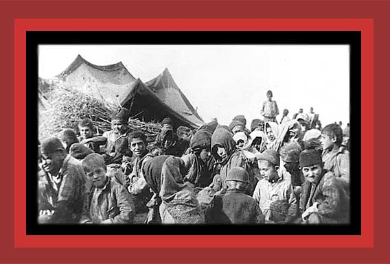

|
This is a 1915 photograph of 28 orphaned Armenian children in the open, all in worn-out clothing, with many covering their heads from the desert sun. This was their final collection center in the desert after being deported from their villages and towns by the Turks. Their fathers likely were murdered at the outset of the genocide, and their mothers probably died during their deportation. Few, if any, of these children will survive. Documentation: Death By Government, and Statistics of Democide. Source: "Armenian Deportees: 1915-1916." From the photo collection of Armin T. Wegner.
Return to Photographs of Democide, Room 3 Home |